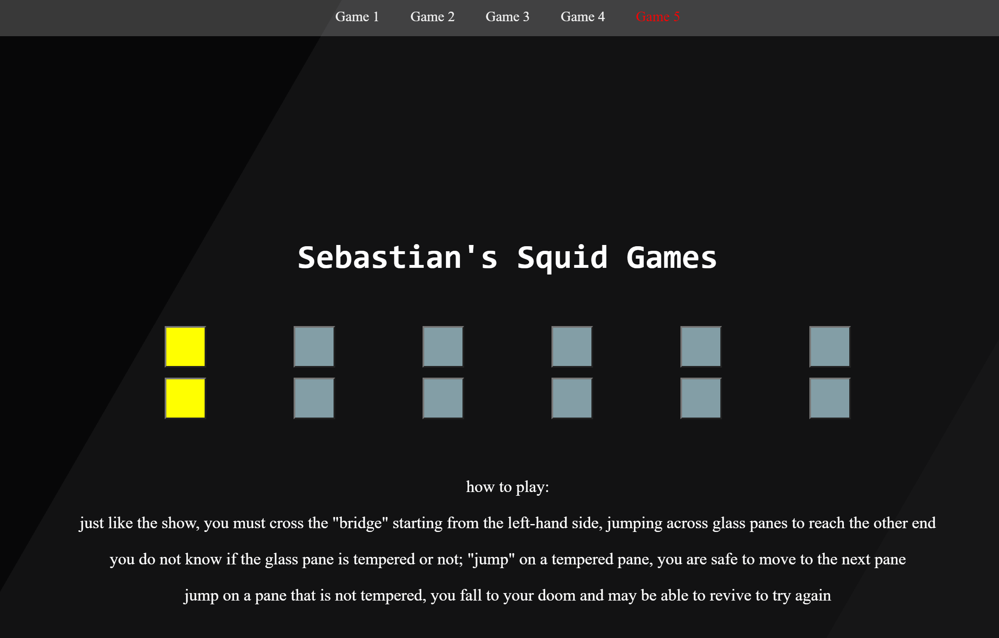

Sebastian's Portfolio
LinkedIn
GitHub
Email
Click on the project's name to be redirected to the website!
A tool that makes it easier to search up/research Purdue classes
A website that displays a random purdue fact
Allows the user to play with different colors and combinations
A tool that makes it easier for college students to create and stick to their meal plan
Recreating games from the hit TV show 'Squid Games'

A fun game to test how accurate your color identification abilities are!
Recreating the popular game of 'crash' (personal favorite)